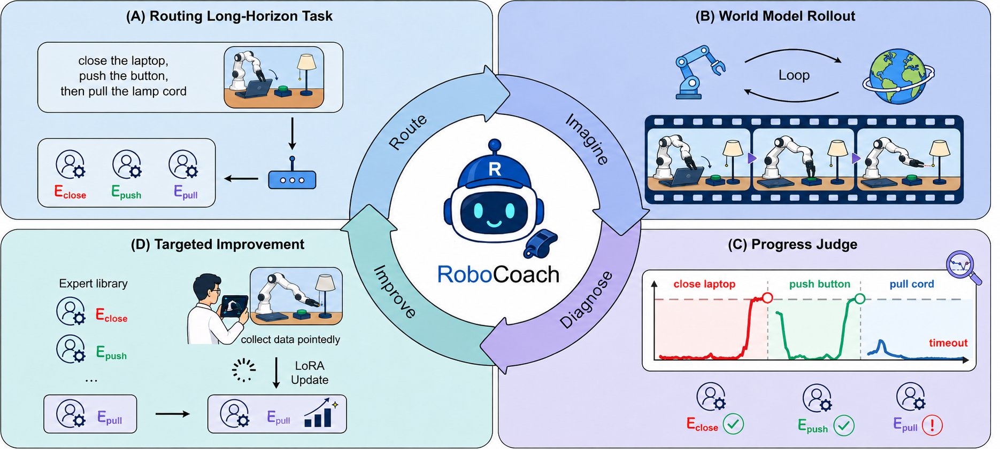

Reordering
The same subtasks, in a different order.
Seen
AB
New
BA
World Models as Active Coaches for Compositional Robot Skills
A world-model-guided framework that attributes the first timeout to the active subtask–expert pair and directs limited demonstrations to modular VLA experts.
World models should do more than simulate experience. They should decide where scarce real experience is most valuable.
System overview
RoboCoach connects two closed loops: an execution loop that routes modular experts through an imagined rollout, and a coaching loop that converts consistent first-timeout diagnoses into a focused data request.


Split the instruction into ordered subtasks and dispatch the matching expert for the active stage.
CoachWorld rolls the routed experts forward in closed loop and predicts the full visual outcome.
RoboMeter tracks causal stage progress and attributes the first timeout to the active subtask–expert pair.
Collect targeted demonstrations, update only the selected LoRA, and return it to the expert bank.
Follow the tea-making task from expert routing and imagined execution to failure diagnosis, targeted demonstrations, and successful execution.
Select a module to explore its role in this task.
Split the tea-making task into pickup, placement, and pouring. Dispatch the matching expert for each active subtask in that order.
Decompose the task, order the subtasks, and dispatch the matching skill expert. Select a planned step to inspect its assignment.
Ordered subtasks → expert roles
Next in the plan: place the tea bag in the cup.
CoachWorld and the real-world rollout both expose a missed pickup. RoboMeter leaves S1 unconfirmed, identifying the stage that needs attention.
The diagnosis becomes a specific data request for the unresolved subtask.
Follow pickup, placement, and pouring in the real-world and CoachWorld rollouts.
Closed-loop improvement
At matched acquisition budgets, RoboCoach repeatedly diagnoses weak subtask-expert pairs and updates only the selected LoRA experts. Simulation receives 100 accepted subtask demonstrations per round; hardware receives 50.
With 150 accepted hardware demonstrations, the matched Single VLA + Uniform baselines finish at 30.0% on Franka and 47.5% on AgileX.

Holding the world-model-targeted demonstration IDs fixed, selected-expert updates add +3.4 points final success on LIBERO and +13.2 points on RoboTwin over one shared global adapter. The corresponding Budget-AUC gains are +2.3 and +7.9 points.
Real-robot task suite
Promptclose the laptop, then pull the lamp cord
Promptpress the green button, then press the red button
Promptput the bread into the pan, then close the lid
PromptPlace the red block into the drawer, then close the drawer.
PromptPut the shoes in the shoebox, then close the box.
PromptWipe the table, then push the plate to the center of the table. Place the cup on the plate.
PromptPlace the tea bag into the cup, then pour water to brew tea.
The same subtasks, in a different order.
Subtasks from different tasks, combined.
Extend a task with subtasks from another.
Promptpress the red button, then press the green button
PromptPut the left shoe in the shoebox, then the right shoe, then close the box.
Promptpress the green button, then pull the lamp cord
PromptWipe the table, then push the plate to the center of the table. Place the cup on the plate, place the tea bag into the cup, then pour water to brew tea.
Predictive model
CoachWorld starts from Wan2.2 TI2V-5B and predicts future video from sparse visual history and future robot states. A shared two-slot state contract supports Franka and bimanual systems; calibrated intrinsics and extrinsics ground state conditioning in each camera view.

Frozen embodiment adapters convert each expert's native action chunk into a shared Cartesian end-effector trajectory.
Two arm slots encode position, 6D rotation, gripper state, and an existence mask; Franka uses one slot and bimanual robots use both.
Intrinsics and extrinsics project future states into each view, while trajectory rasters and camera rays condition the video denoiser.
Sparse history, instruction, and future state generate the next chunk; its final frame becomes the next policy observation.
Interactive · Recorded control
Pick a scene. Click a colored segment to play that part of the motion, or choose Full trajectory to watch now → 1 → 2 → target.
Segments follow the recorded control timing at 5 fps. Nodes show requested EEF positions; the video shows the model’s response. The input image is the clip’s first decoded frame. These are short control previews, not completed-task demonstrations.
Loading recorded controls…
| Method | DROID LPIPS ↓ | DROID FVD ↓ | DROID instruction ↑ | Lab LPIPS ↓ | Lab FVD ↓ | Lab instruction ↑ |
|---|---|---|---|---|---|---|
| Ctrl-World | 0.2078 | 102.97 | 0.7860 | 0.3060 | 493.20 | 0.2460 |
| Cosmos 3 | 0.2830 | 140.62 | 0.5460 | 0.3397 | 634.75 | 0.2460 |
| OSCAR-2B | 0.2248 | 101.92 | 0.5460 | 0.2014 | 236.78 | 0.5840 |
| CoachWorld mixed-domain | 0.0996 | 51.71 | 0.8800 | 0.1712 | 284.76 | 0.5300 |
| CoachWorld single-domain | 0.1067 | 56.56 | 0.8660 | 0.1768 | 297.56 | 0.4240 |
Each domain contains 180 view-specific episodes. Two blind annotators independently score Instruction Following from 1 to 5 on a fixed 30-episode subset; scores are averaged across annotators and episodes, then divided by five to normalize them to [0,1].
2 prompted episodes
Put potatoes on a ceramic plate5.8 s
Move the marker to the right14.6 s
2 prompted episodes
Close the bottom drawer of the cabinet5.0 s
Push the plate to the front of the stove9.0 s
4 prompted episodes
Stack the cup and cola can9.0 s
Stack three colored cubes7.4 s
Fold towels22.6 s
Make sandwiches56.2 s
2 prompted episodes
Stack the green block on the red block9.8 s
Place two bread loaves in the breadbasket7.4 s
RoboMeter progress judge
For every routed subtask, RoboMeter scores progress from the causal video prefix. A stage is confirmed only when its trace crosses a calibrated threshold; the earliest reached stage that never confirms is assigned to the active expert.
Click a stage to seek
At each frame, RoboMeter estimates progress for the current routed subtask using only the rollout observed so far.
Crossing the calibrated 0.75 threshold confirms the active stage and moves the trace to the next subtask.
P1–P5 cross threshold. P6 remains unresolved, localizing the failure to the active placement expert.
Rank subtask–expert pairs.
Coaching round
Follow one evaluation round from task-level success rates to the two subtask-expert pairs selected for the next targeted demonstration batch.